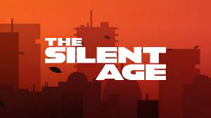
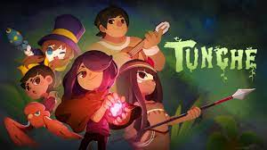
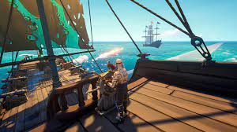
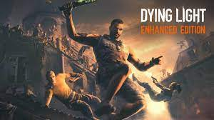

The silent age e Tunche estão de graça até o dia 6 de abril na epic!
 Os próximos jogos gratis da nossa querida epic estão incriveis!. Apartir do dia 6 de abril vamos ter Blazing Sails e Daying Light totamente grátis!
 Couter-strike 2 foi anunciado pela desenvolvedora valve no dia 22/3. Sua data nãp foi confimada porém sabemos que será lançado durante o inverno desse ano.
"A questão do esporte eletrônico a nível federal ainda não é uma realidade. Não tenho essa intenção de investir nisso", declarou Ana
"A meu ver, o esporte eletrônico é uma indústria de entretenimento, não é esporte. Então, você se diverte jogando videogame, você se divertiu. "Ah, mas o pessoal treina para fazer. Treina, assim como o artista. Eu falei esses dias, assim como a Ivete Sangalo também treina para dar show e ela não é atleta da música", afirmou Moser.